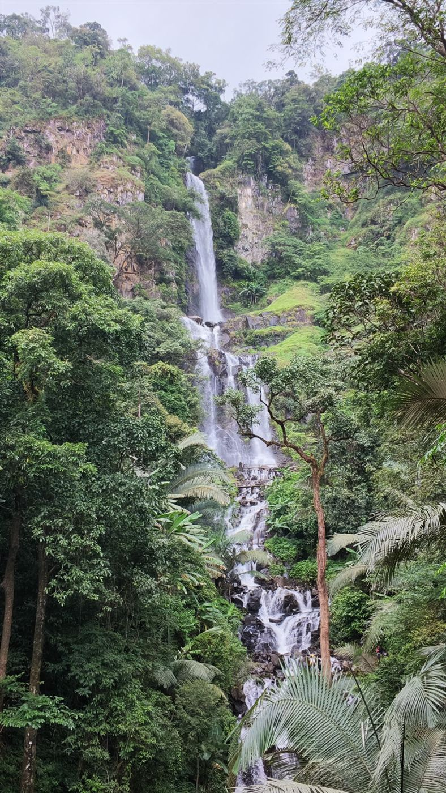

<title>น้ำตกห้วยน้ำเย็น บ้านแม่โขง</title>
<link rel="preconnect" href="https://fonts.googleapis.com">
<link rel="stylesheet" href="https://fonts.googleapis.com/css2?family=Noto+Serif+Thai:wght@500;700&family=IBM+Plex+Sans+Thai:wght@400;500;600&display=swap">
<style>
/* Layout: one narrow reading column; home = intro + numbered trip steps (a real sequence) + cost table; each step is its own page with prev/next */
:root {
  --bg: #f4f6f1;
  --surface: #ffffff;
  --fg: #1f2a22;
  --muted: #5f6d62;
  --line: #d9e0d6;
  --accent: #2f6b45;
  --accent-soft: #e2ede3;
  --display: "Noto Serif Thai", Georgia, serif;
  --body: "IBM Plex Sans Thai", system-ui, sans-serif;
}
@media (prefers-color-scheme: dark) {
  :root:not([data-theme="light"]) {
    --bg: #131915; --surface: #1b231d; --fg: #e3ebe4; --muted: #9aab9e;
    --line: #2c3a30; --accent: #84c79b; --accent-soft: #213128; color-scheme: dark;
  }
}
:root[data-theme="dark"] {
  --bg: #131915; --surface: #1b231d; --fg: #e3ebe4; --muted: #9aab9e;
  --line: #2c3a30; --accent: #84c79b; --accent-soft: #213128; color-scheme: dark;
}
* { box-sizing: border-box; }
body { background: var(--bg); color: var(--fg); font-family: var(--body); font-size: 17px; line-height: 1.8; }
.wrap { max-width: 680px; margin: 0 auto; padding-inline: 20px; }
header.bar { border-bottom: 1px solid var(--line); background: var(--bg); position: sticky; top: env(safe-area-inset-top, 0px); z-index: 2; }
header.bar .wrap { display: flex; align-items: center; justify-content: space-between; gap: 8px 16px; padding-block: 12px; flex-wrap: wrap; }
.brand { font-family: var(--display); font-weight: 700; font-size: 1.05rem; color: var(--fg); text-decoration: none; }
.brand span { color: var(--accent); }
nav.top { display: flex; gap: 16px; font-size: .92rem; }
nav.top a { color: var(--muted); text-decoration: none; }
nav.top a:hover, nav.top a[aria-current="page"] { color: var(--accent); }
a { color: var(--accent); }
a:focus-visible { outline: 2px solid var(--accent); outline-offset: 3px; border-radius: 3px; }
main { padding-block: 36px 64px; }
h1, h2 { font-family: var(--display); line-height: 1.4; text-wrap: balance; margin: 0; }
h1 { font-size: clamp(1.65rem, 5.5vw, 2.3rem); }
h2 { font-size: 1.3rem; margin-top: 2.2em; }
h3 { font-size: 1.05rem; margin: 1.6em 0 0; }
p { margin: 1em 0 0; }
article p, article li, .intro p { max-width: 65ch; }
.lede { color: var(--muted); margin-top: 12px; }
.eyebrow { font-size: .8rem; letter-spacing: .06em; color: var(--accent); font-weight: 600; margin: 0 0 6px; }

.steps { list-style: none; padding: 0; margin: 20px 0 0; border-top: 1px solid var(--line); }
.steps a { display: grid; grid-template-columns: 2.2em 1fr; gap: 2px 12px; padding: 16px 4px; border-bottom: 1px solid var(--line); text-decoration: none; color: var(--fg); }
.steps a:hover { background: var(--accent-soft); }
.steps .n { grid-row: 1 / span 2; font-family: var(--display); font-weight: 700; color: var(--accent); font-size: 1.2rem; font-variant-numeric: tabular-nums; }
.steps .t { font-weight: 600; }
.steps .d { color: var(--muted); font-size: .93rem; line-height: 1.6; }

.facts { display: flex; flex-wrap: wrap; gap: 8px; margin: 18px 0 0; padding: 0; list-style: none; }
.facts li { background: var(--accent-soft); border-radius: 999px; padding: 3px 12px; font-size: .88rem; font-variant-numeric: tabular-nums; }

.callout { margin-top: 1.4em; background: var(--surface); border: 1px solid var(--line); border-radius: 10px; padding: 14px 18px; }
.callout p:first-child { margin-top: 0; }
.quote { font-family: var(--display); font-size: 1.15rem; line-height: 1.7; border-left: 3px solid var(--accent); padding-left: 16px; margin: 1.6em 0 0; }

.table-wrap { overflow-x: auto; margin-top: 18px; }
table { width: 100%; border-collapse: collapse; font-size: .95rem; }
th, td { text-align: left; padding: 10px 8px; border-bottom: 1px solid var(--line); vertical-align: top; }
th { font-size: .8rem; color: var(--muted); font-weight: 600; letter-spacing: .04em; }
td.amt { font-variant-numeric: tabular-nums; white-space: nowrap; font-weight: 600; }
td small { color: var(--muted); display: block; line-height: 1.5; }
.note { color: var(--muted); font-size: .9rem; }

.back { display: inline-block; margin-bottom: 20px; font-size: .92rem; text-decoration: none; }
.pager { margin-top: 48px; padding-top: 18px; border-top: 1px solid var(--line); display: grid; grid-template-columns: 1fr 1fr; gap: 16px; font-size: .93rem; }
.pager a { text-decoration: none; line-height: 1.5; }
.pager .r { text-align: right; }
.pager small { display: block; color: var(--muted); }

.links { list-style: none; padding: 0; margin: 24px 0 0; display: grid; gap: 12px; }
.links a { display: block; background: var(--surface); border: 1px solid var(--line); border-radius: 10px; padding: 16px 18px; text-decoration: none; color: var(--fg); }
.links a:hover { border-color: var(--accent); }
.links b { display: block; font-weight: 600; }
.links small { color: var(--muted); font-size: .9rem; }
.links .host { display: block; color: var(--accent); font-size: .82rem; margin-top: 4px; }
.cta { display: inline-block; margin-top: 18px; background: var(--accent); color: var(--bg); padding: 8px 18px; border-radius: 8px; text-decoration: none; font-weight: 600; }
figure { margin: 1.6em 0 0; }
figure img { display: block; width: 100%; max-width: 100%; border-radius: 10px; background: var(--accent-soft); }
figure.tall img { aspect-ratio: 4 / 5; object-fit: cover; }
figcaption { color: var(--muted); font-size: .86rem; margin-top: 6px; line-height: 1.5; }
.gallery { display: grid; grid-template-columns: 1fr 1fr; gap: 10px; margin-top: 1.6em; }
.gallery figure { margin: 0; min-width: 0; }
.gallery img { aspect-ratio: 3 / 4; object-fit: cover; }
.hero { margin: 0 0 28px; position: relative; }
.hero img { aspect-ratio: 16 / 11; object-fit: cover; object-position: center 40%; }
footer { color: var(--muted); font-size: .85rem; padding-block: 0 40px; }
@media (max-width: 480px) { body { font-size: 16px; } }
</style>

<header class="bar">
  <div class="wrap">
    <a class="brand" href="#home">ห้วยน้ำเย็น <span>บ้านแม่โขง</span></a>
    <nav class="top">
      <a href="#home" data-nav="home">เส้นทาง</a>
      <a href="#cost" data-nav="cost">ค่าใช้จ่าย</a>
      <a href="#links" data-nav="links">ลิงก์</a>
    </nav>
  </div>
</header>
<main class="wrap" id="view" tabindex="-1"></main>
<footer class="wrap">ราคาทั้งหมดเป็นค่าใช้จ่ายจากช่วงที่ผมเดินทางไป แนะนำให้ตรวจสอบอีกครั้งก่อนจอง</footer>

<script>
const FB = "https://www.facebook.com/search/top?q=%E0%B8%99%E0%B9%89%E0%B8%B3%E0%B8%95%E0%B8%81%E0%B8%AB%E0%B9%89%E0%B8%A7%E0%B8%A2%E0%B8%99%E0%B9%89%E0%B8%B3%E0%B9%80%E0%B8%A2%E0%B9%87%E0%B8%99%20%E0%B8%9A%E0%B9%89%E0%B8%B2%E0%B8%99%E0%B9%81%E0%B8%A1%E0%B9%88%E0%B9%82%E0%B8%82%E0%B8%87";
const BOOK = "https://huainamyen.netlify.app/";
const fig = (src, cap, cls = "tall") => `<figure class="${cls}"><figcaption>${cap}</figcaption></figure>`;
const gallery = (...items) => `<div class="gallery">${items.map(([s, c]) => fig(s, c, "")).join("")}</div>`;
const ext = (href, text) => `<a href="${href}" target="_blank" rel="noopener">${text} ↗</a>`;

const steps = [
  {
    id: "booking", title: "การจองคิวไปน้ำตก", desc: "ดูข้อมูลที่เพจ แล้วจองคิวผ่านเว็บไซต์ 50 บาท/คน",
    facts: ["ค่าจอง 50 บาท/คน", "เลือกวันและเวลาได้"],
    body: `<p>อันดับแรก แนะนำให้เข้าไปดูข้อมูลที่เพจ ${ext(FB, "น้ำตกห้วยน้ำเย็น บ้านแม่โขง")} ก่อนครับ</p>
<p>จากนั้นเข้าไปจองคิวผ่านเว็บไซต์ ${ext(BOOK, "huainamyen.netlify.app")} ค่าจอง 50 บาท/คน สามารถเลือกวันและเวลาที่ต้องการเดินทางได้เลย</p>
<div class="callout"><p><b>คำแนะนำ:</b> ส่วนตัวผมแนะนำให้เลือกไปน้ำตกใน<b>วันอาทิตย์</b> แล้วเดินทางขึ้นไปพักตั้งแต่วันเสาร์ เพราะจะได้มีเวลาใช้ชีวิตช้า ๆ พักผ่อน ชมวิว และเก็บบรรยากาศระหว่างทางได้เต็มที่ โดยไม่ต้องรีบร้อนครับ</p></div>
${fig("rice-cloud.jpg", "ทุ่งนาบ้านนาเกียน ช่วงเย็นวันเสาร์")}
<a class="cta" href="${BOOK}" target="_blank" rel="noopener">ไปหน้าจองคิว ↗</a>`
  },
  {
    id: "omkoi", title: "เชียงใหม่ → อำเภออมก๋อย", desc: "รถตู้ไม่เกิน 300 บาท/คน หรือขับรถไปเองแล้วหารค่าน้ำมัน",
    facts: ["รถตู้ ไม่เกิน 300 บาท/คน", "หารค่าน้ำมัน 200 กว่าบาท/คน"],
    body: `<p>สำหรับใครที่เริ่มต้นเดินทางจากตัวเมืองเชียงใหม่ เราจะต้องเดินทางไปที่<b>ที่ว่าการอำเภออมก๋อย</b>ก่อนนะครับ ซึ่งสามารถเลือกเดินทางได้หลายวิธีตามความสะดวกของแต่ละคนเลย</p>
<p>ถ้าใครไม่ได้เอารถส่วนตัวไป ก็สามารถเลือกเดินทางด้วยรถตู้ได้ครับ ค่าโดยสารประมาณไม่เกิน 300 บาท/คน หรือถ้าใครสะดวกขับรถไปเองก็ได้เหมือนกัน</p>
<p>ส่วนตัวผมเลือกนั่งรถไปกับพี่ ๆ ครับ เป็นการเดินทางที่สนุกไปอีกแบบ ได้พูดคุยกันระหว่างทาง แวะพักตามจังหวะของตัวเอง ไม่ต้องรีบร้อนมาก</p>
<p>ค่าน้ำมันในทริปนี้ พวกผมจ่ายรวมกันประมาณ 1,000 บาท พอหารกันแล้วตกคนละ 200 กว่าบาท ถือว่าคุ้มเลยครับ</p>
<p>เมื่อไปถึงอำเภออมก๋อยแล้ว ขั้นตอนต่อไปก็คือการเดินทางขึ้นไปยังบ้านแม่โขง ซึ่งบอกเลยว่าจากตรงนี้ การผจญภัยของจริงกำลังจะเริ่มขึ้นแล้วครับ</p>`
  },
  {
    id: "maekhong", title: "ขึ้นไปบ้านแม่โขง", desc: "จอยรถกับนักท่องเที่ยวคนอื่น ทางโหด ใช้เวลา 2–3 ชั่วโมง",
    facts: ["จอยรถ 300 กว่าบาท/คน", "ใช้เวลา 2–3 ชั่วโมง"],
    body: `<p>ผมแนะนำให้เลือกรถแบบจอยกับนักท่องเที่ยวคนอื่น ๆ แล้วหารค่าใช้จ่ายกัน จะคุ้มกว่าการเหมารถขึ้นไปเองครับ</p>
<p>ข้อดีคือทางเว็บไซต์ที่เราจองคิวสามารถช่วยประสานหารถให้ได้ด้วย สะดวกมาก ๆ</p>
<p>ตอนที่ผมไป มีคนร่วมเดินทางทั้งหมด 9 คน รวมคนที่มาจอยด้วย ทำให้ค่ารถตกคนละประมาณ 300 กว่าบาท</p>
<div class="callout"><p>เส้นทางขึ้นไปค่อนข้างโหดเลยครับ ใช้เวลาประมาณ 2–3 ชั่วโมง เตรียมตัวเตรียมใจไปสักหน่อย แต่เชื่อเถอะว่าพอไปถึงแล้ว ความเหนื่อยระหว่างทางจะค่อย ๆ หายไปเอง</p></div>
${fig("misty-hills.jpg", "หมอกลอยเหนือภูเขา เมื่อขึ้นมาถึงข้างบน")}`
  },
  {
    id: "stay", title: "ที่พัก: คาเด๊อะ โฮมสเตย์ บ้านนาเกียน", desc: "ทุ่งนา ความเงียบ สัญญาณโทรศัพท์ และทางช้างเผือก",
    facts: ["700 บาท รวมอาหารเช้า-เย็น", "หมูกระทะ 500 บาท", "มีสัญญาณโทรศัพท์"],
    body: `<p>จริง ๆ แล้วเราเลือกพักโฮมสเตย์แถวบ้านแม่โขงที่อยู่ใกล้น้ำตกได้เลยนะครับ เหมาะสำหรับคนที่อยากสัมผัสวิถีชีวิตของชาวบ้านอย่างใกล้ชิด</p>
<p>แต่สำหรับผม ผมเลือกพักที่<b>บ้านนาเกียน</b> และอยากแนะนำที่นี่มาก ๆ ช่วงที่ผมไป ทุ่งนากำลังสวยเลยครับ มองออกไปก็เจอวิวสีเขียวสบายตา บรรยากาศเงียบสงบ มีลมพัดผ่าน และที่สำคัญคือมีสัญญาณโทรศัพท์ด้วย</p>
${fig("sunset-field.jpg", "แดดเย็นหลังเมฆ มองจากหน้าโฮมสเตย์")}
<p>หลังจากผ่านเส้นทางที่เหนื่อยมา 2–3 ชั่วโมง สิ่งที่ผมต้องการไม่ใช่สถานที่ที่มีกิจกรรมมากมาย แต่เป็นแค่ที่พักเงียบ ๆ สักแห่ง ให้ได้นั่งนิ่ง ๆ มองธรรมชาติ โดยไม่ต้องคิดถึงอะไร</p>
<p>ตอนเย็นได้นั่งรับแสงอาทิตย์ ดูทุ่งนาตรงหน้า กินหมูกระทะท่ามกลางอากาศดี ๆ แค่นี้ก็รู้สึกว่าได้พักผ่อนเต็มที่แล้วครับ</p>
${gallery(["mookata.jpg", "หมูกระทะริมทุ่งนา"], ["coffee.jpg", "กาแฟยามเช้า"])}
<p>สิ่งที่ทำให้ทริปนี้พิเศษขึ้นไปอีก คือคืนนั้นผมได้เห็น<b>ทางช้างเผือก</b> เป็นความเซอร์ไพรส์ที่ไม่ได้คาดหวังมาก่อนเลย</p>
${gallery(["milkyway.jpg", "ทางช้างเผือกเหนือแนวเขา"], ["milkyway-me.jpg", "คืนที่ฟ้าเปิด"])}
<p class="quote">บางครั้งความสุขจากการเดินทาง ก็ไม่ได้อยู่แค่จุดหมายปลายทาง แต่อยู่ในช่วงเวลาระหว่างทางแบบนี้แหละครับ</p>
<h2>ค่าใช้จ่ายที่พัก</h2>
<ul><li>ค่าที่พักประมาณ 700 บาท รวมอาหารเช้าและอาหารเย็น</li><li>ชุดหมูกระทะแยกต่างหาก 500 บาท</li></ul>
<p>ส่วนตัวผมว่าคุ้มมากครับ โดยเฉพาะกับบรรยากาศและความสงบที่ได้รับกลับมา</p>
${fig("dog.jpg", "เพื่อนสี่ขาประจำโฮมสเตย์")}`
  },
  {
    id: "waterfall", title: "วันเดินทางไปน้ำตก", desc: "รถมารับ 08.00–09.00 น. เดินป่าไป–กลับ 12–13 กม.",
    facts: ["รถรับ 08.00–09.00 น.", "ไป–กลับ 12–13 กม.", "ไกด์ 350 บาท/กลุ่ม"],
    body: `<p>เช้าวันอาทิตย์ นัดรถคันเดิมที่พาขึ้นมาให้มารับที่โฮมสเตย์ประมาณ 08.00–09.00 น. แนะนำให้เก็บสัมภาระและเช็กเอาต์ให้เรียบร้อยไปเลยนะครับ จะได้ไม่ต้องย้อนกลับมาเก็บของอีก</p>
<p>ผมแนะนำให้ไปถึงจุดเริ่มเดินประมาณ 9 โมงเช้า เพราะไม่สายเกินไป และยังมีโอกาสเจอ<b>น้องแพะ</b>ตัวน่ารักที่ออกมาต้อนรับนักท่องเที่ยวด้วยครับ ตอนที่ผมไปอุ้มน้องได้ด้วย อย่าลืมทักทายคุณลุงที่นั่นด้วยนะครับ แกเป็นกันเองมาก</p>
${fig("goat.jpg", "น้องแพะที่จุดเริ่มเดิน")}
<h2>เส้นทางเดิน</h2>
<p>ระยะทางไป–กลับประมาณ 12–13 กิโลเมตร เวลาที่ใช้ขึ้นอยู่กับร่างกายและจังหวะของแต่ละคน ผมเดินไป ถ่ายคลิปไป แวะชมวิวไปเรื่อย ๆ ใช้เวลาเกือบ 4 ชั่วโมง</p>
<p>แต่แปลกดีนะครับ เป็น 4 ชั่วโมงที่ผมแทบไม่รู้สึกเหนื่อยเลย ระหว่างทางมีอะไรให้มองตลอด ทั้งป่า ต้นไม้ ลำธาร ยิ่งเดินลึกเข้าไป ก็ยิ่งรู้สึกว่าการตัดสินใจมาที่นี่คุ้มค่ามากขึ้น</p>
<p class="quote">น้ำตกห้วยน้ำเย็นยังคงสวยงามเสมอ และสวยมากกว่าที่กล้องจะถ่ายทอดออกมาได้จริง ๆ ครับ</p>
${gallery(["waterfall.jpg", "น้ำตกห้วยน้ำเย็นจากมุมไกล"], ["waterfall-rocks.jpg", "ที่ลานหินหน้าน้ำตก"])}
<h2>ค่าไกด์</h2>
<p>ค่าไกด์ 350 บาทต่อกลุ่ม ไม่ว่าจะไปกันกี่คนก็หารกันได้ครับ</p>`
  }
];

const costs = [
  ["ค่าจองน้ำตก", "50 บาท", "ต่อคน"],
  ["เชียงใหม่ → อมก๋อย", "200 กว่าบาท", "ต่อคน หารค่าน้ำมัน · หรือรถตู้ไม่เกิน 300 บาท/คน"],
  ["รถขึ้นบ้านแม่โขง", "300 กว่าบาท", "ต่อคน กรณีจอยรถ"],
  ["ที่พัก คาเด๊อะ โฮมสเตย์", "700 บาท", "รวมอาหารเช้าและเย็น"],
  ["ชุดหมูกระทะ", "500 บาท", "ต่อชุด แยกจากค่าที่พัก"],
  ["ค่าไกด์", "350 บาท", "ต่อกลุ่ม หารกันได้"]
];

const view = document.getElementById("view");

function home() {
  return `<figure class="hero"></figure>
  <div class="intro"><p class="eyebrow">อมก๋อย · เชียงใหม่</p>
  <h1>น้ำตกห้วยน้ำเย็น บ้านแม่โขง 🌿</h1>
  <p class="lede">รายละเอียดการเดินทาง ค่าใช้จ่าย และที่พัก สำหรับคนที่อยากออกไปสัมผัสธรรมชาติสักครั้ง</p>
  <p>เผื่อใครกำลังวางแผนอยากไป แต่ยังไม่รู้ว่าต้องเริ่มจากตรงไหน จองยังไง พักที่ไหนดี หรือมีค่าใช้จ่ายอะไรบ้าง บอกไว้ก่อนเลยว่าการเดินทางครั้งนี้อาจไม่ได้สะดวกสบายที่สุด แต่ระหว่างทางและสิ่งที่ได้เจอ มันคุ้มค่ามากจริง ๆ ครับ</p>
  <ul class="facts"><li>แนะนำ: ขึ้นวันเสาร์ เดินน้ำตกวันอาทิตย์</li><li>เดินป่า 12–13 กม.</li></ul></div>
  <h2>เส้นทางทีละขั้น</h2>
  <ol class="steps">${steps.map((s, i) => `<li><a href="#${s.id}"><span class="n">${i + 1}</span><span class="t">${s.title}</span><span class="d">${s.desc}</span></a></li>`).join("")}
  <li><a href="#cost"><span class="n">${steps.length + 1}</span><span class="t">สรุปค่าใช้จ่าย</span><span class="d">รวมทุกรายการไว้ในตารางเดียว</span></a></li></ol>`;
}
function step(s) {
  const i = steps.indexOf(s), prev = steps[i - 1], next = steps[i + 1];
  const nextLink = next ? `<a class="r" href="#${next.id}"><small>ถัดไป</small>${next.title} →</a>` : `<a class="r" href="#cost"><small>ถัดไป</small>สรุปค่าใช้จ่าย →</a>`;
  return `<a class="back" href="#home">← กลับหน้ารวม</a>
  <article><p class="eyebrow">ขั้นที่ ${i + 1} จาก ${steps.length + 1}</p><h1>${s.title}</h1>
  <ul class="facts">${s.facts.map(f => `<li>${f}</li>`).join("")}</ul>${s.body}</article>
  <div class="pager">${prev ? `<a href="#${prev.id}"><small>ก่อนหน้า</small>← ${prev.title}</a>` : "<span></span>"}${nextLink}</div>`;
}
function cost() {
  const last = steps[steps.length - 1];
  return `<a class="back" href="#home">← กลับหน้ารวม</a>
  <article><p class="eyebrow">ขั้นที่ ${steps.length + 1} จาก ${steps.length + 1}</p><h1>สรุปค่าใช้จ่าย</h1>
  <div class="table-wrap"><table><thead><tr><th>รายการ</th><th>ราคา</th></tr></thead><tbody>
  ${costs.map(c => `<tr><td>${c[0]}<small>${c[2]}</small></td><td class="amt">${c[1]}</td></tr>`).join("")}
  </tbody></table></div>
  <p class="note">ราคาทั้งหมดเป็นค่าใช้จ่ายจากช่วงที่ผมเดินทางไปนะครับ แนะนำให้ตรวจสอบราคาและรายละเอียดอีกครั้งก่อนจอง</p>
  <h2>ท้ายทริป</h2>
  <p>ผมอยากให้ทุกคนได้ลองไปสัมผัสน้ำตกห้วยน้ำเย็นด้วยตัวเองสักครั้งครับ เพราะบางสถานที่ ต่อให้ถ่ายรูปสวยแค่ไหน ก็ยังถ่ายทอดความรู้สึกตอนที่ได้ยืนอยู่ตรงนั้นจริง ๆ ออกมาได้ไม่หมด</p>
  <p>ทริปนี้ไม่ได้มีดีแค่ความสวยของน้ำตก แต่ยังมีความสุขเล็ก ๆ ระหว่างทาง ทั้งทุ่งนา แสงแดดยามเย็น ท้องฟ้าที่เต็มไปด้วยดวงดาว และช่วงเวลาที่ได้อยู่กับตัวเองท่ามกลางธรรมชาติ</p>
  <p class="quote">อย่ามัวแต่รอให้ทุกอย่างพร้อม แล้วค่อยออกเดินทางนะครับ แล้วอย่าลืมออกไปใช้ชีวิตกันนะครับ 🌿</p>
  <a class="cta" href="${BOOK}" target="_blank" rel="noopener">จองคิวน้ำตก ↗</a></article>
  <div class="pager"><a href="#${last.id}"><small>ก่อนหน้า</small>← ${last.title}</a><a class="r" href="#home"><small>กลับ</small>หน้ารวม</a></div>`;
}
function linkPage() {
  return `<h1>ลิงก์ที่ใช้</h1><p class="lede">กดแล้วจะเปิดในแท็บใหม่</p>
  <ul class="links">
  <li><a href="${FB}" target="_blank" rel="noopener"><b>เพจ น้ำตกห้วยน้ำเย็น บ้านแม่โขง</b><small>ดูข้อมูลและข่าวล่าสุดก่อนเดินทาง</small><span class="host">facebook.com ↗</span></a></li>
  <li><a href="${BOOK}" target="_blank" rel="noopener"><b>จองคิวน้ำตก</b><small>50 บาท/คน เลือกวันและเวลา และช่วยประสานหารถขึ้นบ้านแม่โขง</small><span class="host">huainamyen.netlify.app ↗</span></a></li>
  </ul>`;
}

function render() {
  const key = location.hash.slice(1) || "home";
  const s = steps.find(x => x.id === key);
  view.innerHTML = s ? step(s) : key === "cost" ? cost() : key === "links" ? linkPage() : home();
  const navKey = s ? "home" : key;
  document.querySelectorAll("[data-nav]").forEach(a => a.dataset.nav === navKey ? a.setAttribute("aria-current", "page") : a.removeAttribute("aria-current"));
  document.title = s ? s.title + " · ห้วยน้ำเย็น" : "น้ำตกห้วยน้ำเย็น บ้านแม่โขง";
  window.scrollTo(0, 0);
}
window.addEventListener("hashchange", render);
render();
</script>
